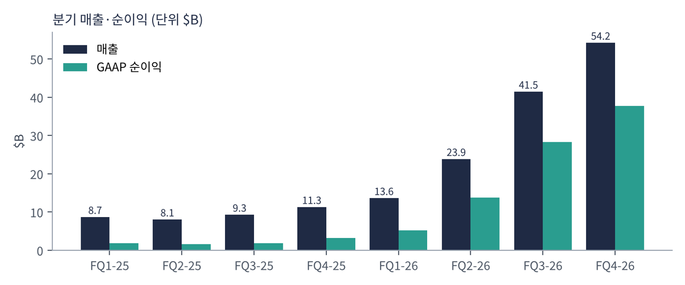
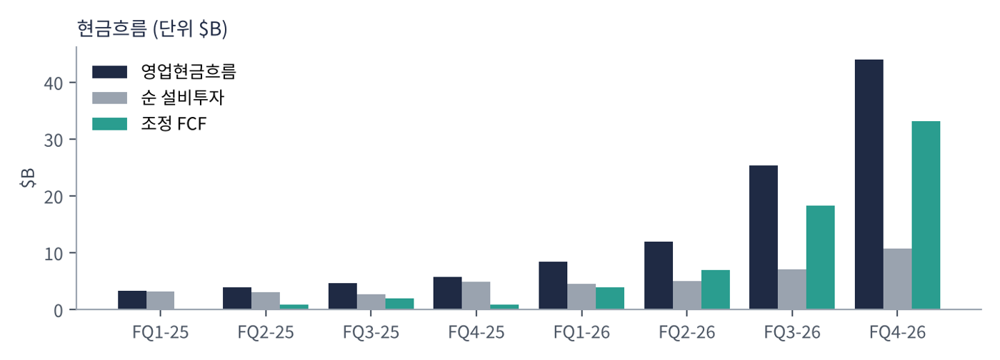
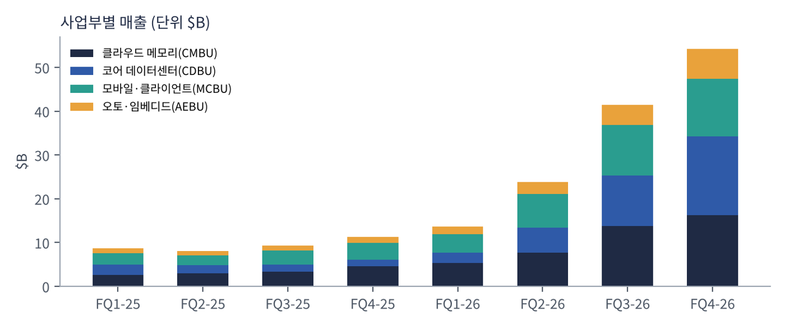
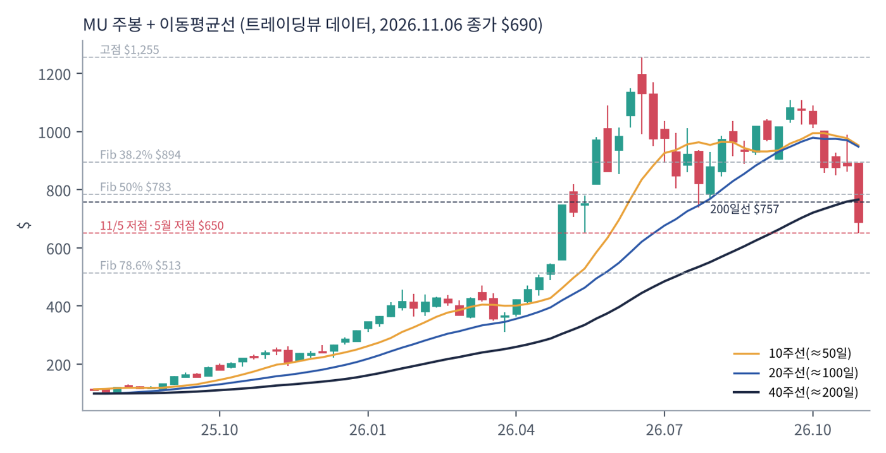
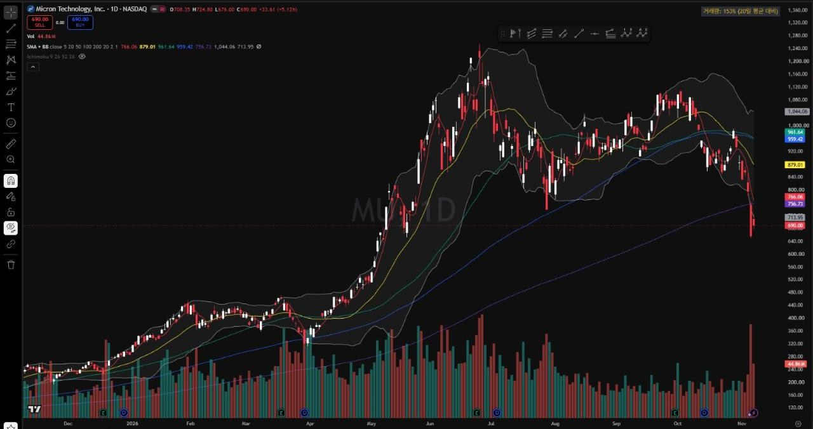
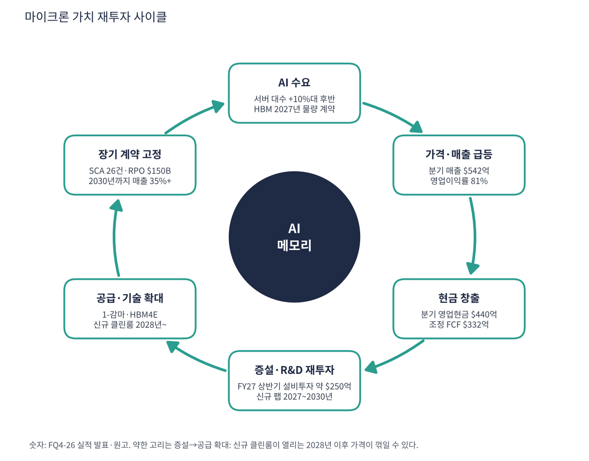

마이크론은 컴퓨터가 일하는 동안 데이터를 잠깐 올려두는 작업대 DRAM과, 전원을 꺼도 데이터를 보관하는 창고 NAND를 설계부터 생산까지 직접 하는 미국 유일의 대형 메모리 회사다. 삼성전자·SK하이닉스와 함께 DRAM 3강이다. AI 가속기 옆에 붙는 고대역폭 메모리(HBM)와 서버용 대용량 DRAM이 모자라면서 2년 만에 분기 매출이 $87억에서 $542억으로 6배가 됐다.
| 항목 | 내용 |
|---|---|
| 종목 | Micron Technology, Inc. (MU) · NASDAQ · 반도체 · 1978년 설립 · 본사 아이다호주 보이시 |
| 시가총액 | 약 $7,807억 · TTM PER 9.3배(FY26 EPS $74.21 기준) · 배당 분기 $0.15 (트레이딩뷰, 11/6 종가 $690) |
| 최근 분기(FQ4-26) | 매출 $542.3억(+379%), 영업이익 $437.5억(80.7%), 순이익 $377.0억, EPS $32.87 |
| 다음 분기 가이던스 | FQ1-27 매출 $615억 ± $15억, 비GAAP EPS $38.15 ± $1.00 |
| 직원·발행주식 | 약 6.1만 명 · 11억 3,142만 주 |
| 다음 실적 | FQ1-27 실적: 2026년 12월 23일 전후 발표 예상 (회계연도는 9월 초 종료) |
| 직책 | 인물 | 역할·특징 |
|---|---|---|
| 회장 겸 CEO | 산제이 메로트라 | 2017년 CEO 취임. 범용 메모리를 '고객 플랫폼에 맞춘 제품'으로 바꾸는 전략과 다년 계약(SCA) 도입을 주도 |
| 사장 겸 COO | 마니시 바티아 | 사업부·글로벌 운영·손익 총괄. 수요에서 공급까지 한 사람이 결정하게 한 신설 구조 |
| 사장 겸 CTO·제품책임자 | 스콧 드부어 | 기술 로드맵(1-감마·HBM4E)과 연구소 총괄 |
경영 스타일: '가격보다 계약, 물량보다 규율'. 경영진은 메모리를 원자재가 아니라 AI 성능을 결정하는 전략 부품으로 부르고, 호황의 이익을 장기 계약(SCA 26건)으로 고정하려 한다. 동시에 장비 투자는 수요에 맞춰 조절하겠다고 '규율'을 반복하지만, FY27 상반기 설비투자가 약 $250억으로 FY26 전체($274억)의 거의 절반을 넘는다. 말은 절제, 행동은 증설이다.
EUV를 처음 적용한 1-감마 DRAM을 업계 첫 양산했고, HBM4(1-베타)는 주요 고객 플랫폼에 대량 출하 중이다. 엔비디아용 커스텀 HBM4E, 512GB 서버 모듈, 서버용 저전력 SOCAMM처럼 고객 맞춤 제품 비중을 키운다.
10-K는 존재 이유를 "accelerating intelligence to enrich life for all"로 요약한다. 목표는 호황과 불황이 3~4년마다 반복되는 구조를 다년 계약으로 완화하고, 초과 현금의 100%를 주주에게 돌려주는 우량 기업으로 평가받는 것이다.
| 분기 | 매출 | QoQ | 매출총이익률 | 영업이익 | 이익률 | 순이익 | 영업현금 | 순설비투자 | 조정 FCF | EPS | 특이 사항 |
|---|---|---|---|---|---|---|---|---|---|---|---|
| FQ1-25 | $87.1억 | – | 38.4% | $21.7억 | 25% | $18.7억 | $32.4억 | $31.3억 | $1.1억 | $1.67 | |
| FQ2-25 | $80.5억 | -8% | 36.8% | $17.7억 | 22% | $15.8억 | $39.4억 | $30.9억 | $8.6억 | $1.41 | 역성장, 사이클 바닥 |
| FQ3-25 | $93.0억 | +15% | 37.7% | $21.7억 | 23% | $18.9억 | $46.1억 | $26.6억 | $19.5억 | $1.68 | |
| FQ4-25 | $113억 | +22% | 44.7% | $36.5억 | 32% | $32.0억 | $57.3억 | $49.3억 | $8.0억 | $2.83 | 가격 상승 시작 |
| FQ1-26 | $136억 | +21% | 56.0% | $61.4억 | 45% | $52.4억 | $84.1억 | $45.0억 | $39.0억 | $4.60 | |
| FQ2-26 | $239억 | +75% | 74.4% | $161억 | 68% | $138억 | $119억 | $50.0억 | $69.0억 | $12.07 | 가이던스 +28% 초과 |
| FQ3-26 | $415억 | +74% | 84.6% | $333억 | 80% | $282억 | $254억 | $71.0억 | $183억 | $24.67 | SCA 16건·HBM4 출하 |
| FQ4-26 | $542억 | +31% | 86.8% | $438억 | 81% | $377억 | $440억 | $108억 | $332억 | $32.87 | SCA 26건, 14주 분기 |


흐름 요약: FQ2-25(분기 -7.5%)가 사이클 바닥이었고 이후 6분기 연속 늘었다. 특히 FQ2-26에 +75%, FQ3-26에 +74% 뛰며 매출총이익률이 37%에서 87%로 올라섰다. 가이던스 초과폭은 +28% → +24% → +9%로 줄고 있고, FQ1-27 가이던스($615억)도 전 분기 대비 +13%다(14주였던 직전 분기를 주 단위로 보면 약 +22%). 현금은 분기 영업현금 $440억, 조정 FCF $332억으로 늘었고 FY26 말 현금·투자는 $734.8억, 부채 $52억이다.
| 사업부 | 주요 제품·고객 | FQ4-26 매출 | 비중 | 영업이익률 |
|---|---|---|---|---|
| 클라우드 메모리 (CMBU) | 하이퍼스케일러용 HBM, 고용량 서버 DRAM, 데이터센터 SSD | $162.8억 | 30% | 76% |
| 코어 데이터센터 (CDBU) | 서버 OEM용 DRAM·SSD, 서버용 LPDDR(SOCAMM) | $180.0억 | 33% | 85% |
| 모바일·클라이언트 (MCBU) | 스마트폰 LPDDR, PC용 DRAM·SSD | $131.1억 | 24% | 88% |
| 오토·임베디드 (AEBU) | 자동차·산업·소비자 기기용 메모리 | $68.2억 | 13% | 79% |

돈 버는 공식은 '비트 × 가격'. 매출은 저장 용량(비트) 출하량 곱하기 비트당 가격이다. FY26 매출의 76%가 DRAM이고, 4분기 DRAM은 출하량이 한 자릿수 중반 늘 때 가격이 10%대 후반 올랐다. 즉 지금의 이익은 더 많이 팔아서가 아니라 더 비싸게 팔아서 나온다. 데이터센터 SSD 매출은 약 $100억(1년 전의 10배)으로 NAND의 3분의 2다.
| 보조 지표 | 내용 |
|---|---|
| 고객 구조 | 상위 10개 고객이 매출의 약 절반(10-K). 하이퍼스케일러·서버 OEM·스마트폰/PC 제조사·엔비디아 같은 가속기 업체 |
| SCA(전략적 고객 계약) | 26건, 2030년까지 매출의 35% 이상. 다수는 가격 하한·상한 밴드. RPO 약 $150B, 고객 예치금 $127억 |
| 이익률 역전 | HBM이 든 클라우드 사업부(76%)보다 범용 제품을 파는 사업부(85~88%)의 이익률이 높다. HBM이 웨이퍼를 많이 쓰는 탓에 범용 DRAM이 더 귀해졌다 |
10-K는 존재 이유를 "accelerating intelligence to enrich life for all"(지능을 가속해 모두의 삶을 풍요롭게)이라고 쓴다. 행동에서 읽히는 목적은 '메모리를 AI 성능을 결정하는 전략 부품으로 재정의하고, 그 대가를 장기 계약으로 고정해 사이클의 골짜기를 얕게 만드는 것'이다.
| 축 | 내용 |
|---|---|
| 범용 → 맞춤형 | 엔비디아용 커스텀 HBM4E, SOCAMM, 512GB DDR5처럼 고객 플랫폼에 맞춘 제품 비중 확대. 소비자 브랜드(Crucial)는 철수해 저부가 시장에서 빠짐 |
| 사이클 → 계약 | SCA로 2030년까지 매출의 35%+를 확정하고 장기 목표는 절반 이상. 초과 현금은 장기적으로 100% 주주환원 |
| 미국 메모리 공급망의 앵커 | 미국에서 DRAM을 만드는 유일한 대형사. 아이다호·뉴욕·버지니아에 공장을 짓고 국방·항공우주까지 '미국 내 공급 보장'을 강조 |


위: 트레이딩뷰 주봉 데이터로 재구성(10·20·40주선, 피보나치는 2026.3월 저점 $311 → 6월 고점 $1,255). 아래: 트레이딩뷰 공개 차트 일봉 캡처(작도 숨김, 이동평균선·볼린저밴드만 표시).
| 이동평균 | 값 | 종가 대비 | 해석 |
|---|---|---|---|
| 5일선 | $766.00 | -9.9% | 단기 하락 가속 |
| 20일선 | $879.00 | -21.5% | 50일선 아래로 → 단기 데드크로스 |
| 50일선 | $962.00 | -28.3% | 9~10월 박스권 중심, 강한 저항 |
| 100일선 | $959.00 | -28.1% | 50일선과 겹쳐 $960 부근이 두꺼운 저항대 |
| 200일선 | $757.00 | -8.9% | 11/4 이탈. 2025년 9월 이후 첫 200일선 아래 마감 |
50주선($675)이 장기 추세의 마지막 방어선이다. 11/5 장중 저점 $650이 이 선을 잠깐 뚫었다가 회복했다. 6월 고점 $1,255에서 -45%다.
| 규칙 | 기준 | 현재 값 | 신호 |
|---|---|---|---|
| 장기 추세 필터 | 종가 vs 200일선 | $690.00 < $757.00 | 매도 |
| 중장기 교차 | 50일선 vs 200일선 | $962.00 > $757.00 | 매수 |
| 단기 교차 | 20일선 vs 50일선 | $879.00 < $962.00 | 매도 |
| 돈키언 채널 | 55일 고가 $1,108.72 / 저가 $650.00 | 중간값 $879.36 아래 | 매도 |
| 1개월 모멘텀 | 21거래일 수익률 | -33.4% (기준 $1,036.00) | 매도 |
| 3개월 모멘텀 | 63거래일 수익률 | -19.9% (기준 $861.40) | 매도 |
| 6개월 모멘텀 | 126거래일 수익률 | -7.6% (기준 $746.80) | 매도 |
| 12개월 모멘텀 | 252거래일 수익률 | +190.5% (기준 $237.50) | 매수 |
| 종합 (8개 평균) | -0.50 | 매도 우위 |
해석: 8개 신호 중 6개 매도다. 단기·중기 모델은 이미 롱을 정리했거나 숏으로 돌아섰을 가능성이 높고, 12개월 모멘텀(+190%)만 남은 장기 모델이 롱을 들고 있다. 60일 변동성이 연 69%(14일 ATR $57.60 (8.3%))라 변동성에 맞춰 포지션을 줄이는 CTA 특성상 추가 매도가 나올 수 있다. 11/5 거래량 7,800만 주(평소 2.6배)는 투매 성격이다.
| 가격 | 무엇이 바뀌나 | 의미 |
|---|---|---|
| $747 ~ 757 | 6개월 모멘텀 + 200일선 회복 | 장기 모델 매도 압력 해소 |
| $861 ~ 879 | 3개월 모멘텀 + 20일선 회복 | 중기 모델 재진입 |
| $960 ~ 1,036 | 50·100일선 + 1개월 모멘텀 회복 | 단기 모델까지 롱 = 추세 복귀 |
| $675 / $650 이탈 | 50주선 이탈 + 55일 신저점 재경신 | 추가 기계적 매도 |
| 구분 | 가격대 | 근거 |
|---|---|---|
| 저항 3 | $960 ~ 1,036 | 50·100일선 밀집, 1개월 모멘텀 기준가 |
| 저항 2 | $849 ~ 894 | 10월 박스 하단, 20일선 $879, 피보나치 38.2% $894 |
| 저항 1 | $757 ~ 795 | 200일선, 피보나치 50% $783, 11/4 종가 $795 |
| 지지 1 | $650 ~ 675 | 11/5 저점 $650, 5월 주봉 저점 $652, 피보나치 61.8% $672, 50주선 $675 |
| 지지 2 | $546 ~ 600 | 5월 첫 주 갭 미메움 구간, $600 심리선 |
| 지지 3 | $513 | 피보나치 78.6%. 이탈하면 3월 이후 상승 추세 훼손 |
실적(12/23 전후)까지는 $650~800 박스에서 바닥을 다질 가능성이 높다. $650~675에서 2~3일 종가 지지를 확인하면 계획 비중의 30~40%만 분할 진입(진입 $670·손절 $620 기준 손익비 1:1.7~1:4.2), $757 종가 회복 시 나머지를 추가한다. 1차 $757~795에서 40%, 2차 $861~879에서 40% 익절하고 나머지는 $960 돌파를 보고 판단한다. 주봉 종가가 $650 아래면 '눌림목' 시나리오는 폐기한다.
| 악재 요인 | 내용 | 강도 |
|---|---|---|
| 가격 상승 둔화·정점 논란 | 가이던스 초과율 28% → 24% → 9%, FY27 가격 인상 속도 완만 예고. 시장은 증가율 둔화를 정점 신호로 읽음 | 높음 |
| AI 투자·정책 불확실 | 11/5 -17.5%: 미 중간선거 후 데이터센터 규제 우려와 대만 신규 팹 공사 중단 보도가 겹침. 수요의 원천이 하이퍼스케일러 투자 | 높음 |
| 2028년 이후 공급 증가 | 마이크론·경쟁사 신규 클린룸이 같은 시기에 가동. 중국 CXMT·YMTC의 저가 공세 | 중간 |
| 수요 파괴 | 메모리 가격 급등으로 PC·스마트폰 출하 대수 두 자릿수 감소 가능, 서버당 탑재량 증가율 하향 | 중간 |
| 고객·지역 집중 | 상위 10개 고객이 매출 절반, DRAM 생산의 약 60%가 대만. 중국 핵심 인프라의 마이크론 제품 구매 제한(2023) | 중간 |
| SCA 가격 상한 | 계약의 3/4이 가격 틀 고정, 다수는 하한·상한 밴드라 추가 상승분을 막을 수 있음 | 참고 |
| 티커 | 회사 | 시가총액 | PER(TTM) | PEG | P/S | EPS 성장(YoY) |
|---|---|---|---|---|---|---|
| MU | 마이크론 | $781B | 9.3배 | 0.01 | 5.59배 | +879% |
| SNDK | 샌디스크 | $119B | 6.7배 | – | 4.18배 | – |
| WDC | 웨스턴디지털 | $99B | 10.2배 | 0.04 | 6.36배 | +275% |
| STX | 시게이트 | $106B | 24.2배 | 0.15 | 7.06배 | +144% |
SK하이닉스는 3분기 EPS 연환산 기준 PER 약 4배, 삼성전자는 사이트 별도 보고서 참고. 트레이딩뷰 EPS 성장률은 불황 바닥 대비라 모두 비정상적으로 높다.
비교 결론: 메모리·저장장치 업체 중 마이크론 PER 9.3배는 웨이퍼 업체 중 가장 낮고(웨스턴디지털 10.3, 시게이트 24.2), 샌디스크(6.7배)와 함께 시장이 '이익 정점'으로 보는 그룹이다. PEG만 보면 전부 0.2 이하라 PEG로는 아무것도 가려낼 수 없는 구간이고, 구분 기준은 이익이 언제 꺾이느냐다.
마이크론은 적자 기업이 아니다. 영업이익률이 80%를 넘고 FCF가 분기 $332억이라 '런웨이'(남은 현금으로 몇 년 버티나)는 의미가 없다. 대신 이 현금이 지속되는가를 점검했다.
| 지표 | 값 | 계산·출처 | 해석 |
|---|---|---|---|
| 최근 4분기 영업현금 | $897억 | FQ1-26~FQ4-26 합계 | 2년 전의 약 6배 |
| 최근 4분기 순설비투자 | $232억 | 같은 기간 합계 | FY27 상반기에만 약 $250억 계획 |
| 조정 FCF (TTM) | +$623억 | IR 조정 FCF 합계. 트레이딩뷰 FCF $590억 | 분기 $332억 흑자 |
| 현금·유가증권 / 총부채 | $734.8억 / $52억 | FY26 말 (IR, 10-K) | 순현금 약 $683억 |
| 고객 예치금·약정 | $320억 (예치금 $127억) | SCA 고객 재무 약정 | 빚 성격이라 FCF엔 안 잡힘 |
| 가정 | 연간 FCF | 순현금 $683억 기준 | 의미 |
|---|---|---|---|
| FQ4-26 속도 유지 | 약 +$1,330억 | 해당 없음 | 현재 실적 |
| 메모리 가격 하락으로 FCF 80% 감소(가정) | 약 +$266억 | 순현금 $683억 + 매년 $266억 증가 | 가격이 크게 꺾여도 현금이 줄지 않는 구조 |
둘째 행 'FCF 80% 감소'는 내가 둔 스트레스 가정이다. 회사가 제시한 수치가 아니다.
| 기준 | 매출 | P/S | 비고 |
|---|---|---|---|
| 트레이딩뷰 표시값(11/6 환산) | – | 5.6배 | 산출 기준 차이로 아래보다 낮음 |
| FY26 실적 (최근 4분기) | $1,332억 | 5.9배 | 시총 $7,807억 ÷ $1,332억 |
| FQ1-27 가이던스 연율화 | $2,460억 | 3.2배 | $615억 × 4 (가정) |
| 동종 저장·메모리 | – | – | 샌디스크 4.2, 웨스턴디지털 6.4, 시게이트 7.1 |
해석: 마이크론 P/S 5.9배는 같은 저장장치 업체와 비슷한 수준이다. 이 숫자는 싸다기보다 '이익률 80%가 얼마나 오래 가느냐'를 가린다. 평소 이익률 20~30%일 때의 P/S는 2~3배였다. 매출이 가이던스대로 늘면 1년 뒤 P/S는 3배대지만, 이익률이 평년(30%)으로 돌아오면 같은 매출에서 이익이 4분의 1이 된다.
| 지표 | 값 | 판정 |
|---|---|---|
| EBITDA (트레이딩뷰, TTM) | $1,094억 | 흑자 |
| 영업이익 (FY26) | $993.5억 | FQ1~FQ4 합계 |
| 영업이익 → EBITDA 차이 | 약 $100억 | 감가상각·상각비(추정). 설비투자 확대로 증가 예정 |
| EBITDA 마진 | 82% | $1,094억 ÷ $1,332억 |
| 순부채 / EBITDA | 순현금 | 현금 $734.8억 > 부채 $52억 |
EBITDA도 영업이익도 사상 최대 흑자다. 감가상각은 지금 $100억 수준이지만 설비투자가 분기 $100억대로 커져 몇 년 뒤 이익을 눌러 줄 비용이 된다.
| 방식 | PER | EPS 성장률 | PEG | 판정 |
|---|---|---|---|---|
| 트레이딩뷰 (TTM, 11/6 환산) | 9.3배 | +878.8% | 0.01 | 적극 매수 |
| 직접 계산 (FY26 GAAP EPS) | 9.3배 ($690 ÷ $74.21) | +878% ($7.59 → $74.21) | 0.01 | 적극 매수 |
| 선행 (FQ1-27 가이던스 EPS ×4 = $152.6) | 4.5배 | 약 +106% ($74.2 → $152.6) | 0.04 | 적극 매수 |
| 이익 반토막 가정 (EPS $76, 가정) | 9.1배 | -50% | – | 해당 없음 |
판정: 숫자로는 PEG 0.01 → '적극 매수' 구간이지만 믿기 어렵다. 성장률 879%는 불황 바닥(FY25 EPS $7.59)에서 정점으로 올라온 값이라, 앞으로 반복될 수 없는 숫자다. 메모리 주식은 PER이 가장 낮은 때가 이익의 정점일 수 있다. 의미 있는 질문은 '성장률이 얼마인가'가 아니라 '이익이 얼마나 줄어도 현재 주가가 정당화되는가'다. 위 4행처럼 이익이 반토막이 나도 PER은 9배 수준이다.

마이크론 사이클의 엔진은 AI 데이터센터가 부르는 메모리 가격이다. 가격이 이익을 만들고, 이익이 증설·기술 투자로 돌아가며, 새 공급이 열리는 시점이 사이클의 수명을 정한다.
| 고리 | 현재 숫자 | 고리 강도 | 약해지는 신호 |
|---|---|---|---|
| ① AI 수요 | 서버 대수 2026·27년 10%대 후반 증가, 2027년 HBM 물량 대부분 계약 완료 | 강함 | 하이퍼스케일러 투자 둔화, 서버당 탑재량 증가 둔화 |
| ② 가격·매출 | FQ4 매출 $542억, DRAM 가격 +10%대 후반이지만 FY27은 상승 속도 완만 예고 | 둔화 | 가이던스 초과율 28% → 24% → 9%로 축소 |
| ③ 현금 창출 | 분기 영업현금 $440억, 조정 FCF $332억, 순현금 $683억 | 강함 | 영업이익률 80% 하회 |
| ④ 증설·R&D 재투자 | FY27 상반기 설비투자 약 $250억(건설 투자 증가율이 장비보다 큼) | 가속 | 투자 대비 공급이 2028년 이후에 몰림 |
| ⑤ 공급·기술 확대 | 1-감마 양산, HBM4E 2027년, 신규 팹 2027 중반~2030년 순차 가동 | 진행 중 | 대만 신규 팹 공사 중단, 공정 지연 |
| ⑥ 장기 계약 고정 | SCA 26건·RPO $150B, 2030년까지 매출 35%+ | 강함 | 가격 상한 조항이 상승분을 막을 때 |
이 사이클의 구조: ③에서 번 현금이 ④로 가고, ⑤에서 공급이 늘면 ②의 가격은 내려간다. 즉 이 사이클은 잘 돌수록 스스로 가격을 낮추는 고리다. SCA(⑥)는 이 가격 하락의 바닥을 받치려는 장치다. 약한 고리는 ②(가격 상승률 둔화)와 ④→⑤(증설이 공급 과잉으로 이어지는 시점)이고, 강한 고리는 ①·③·⑥이다. 신규 클린룸이 대규모로 열리는 2028년이 분기점이다.